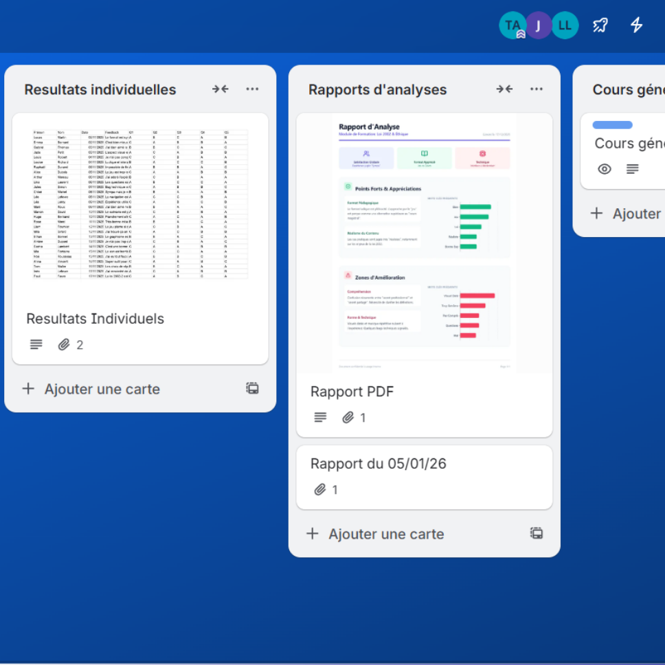
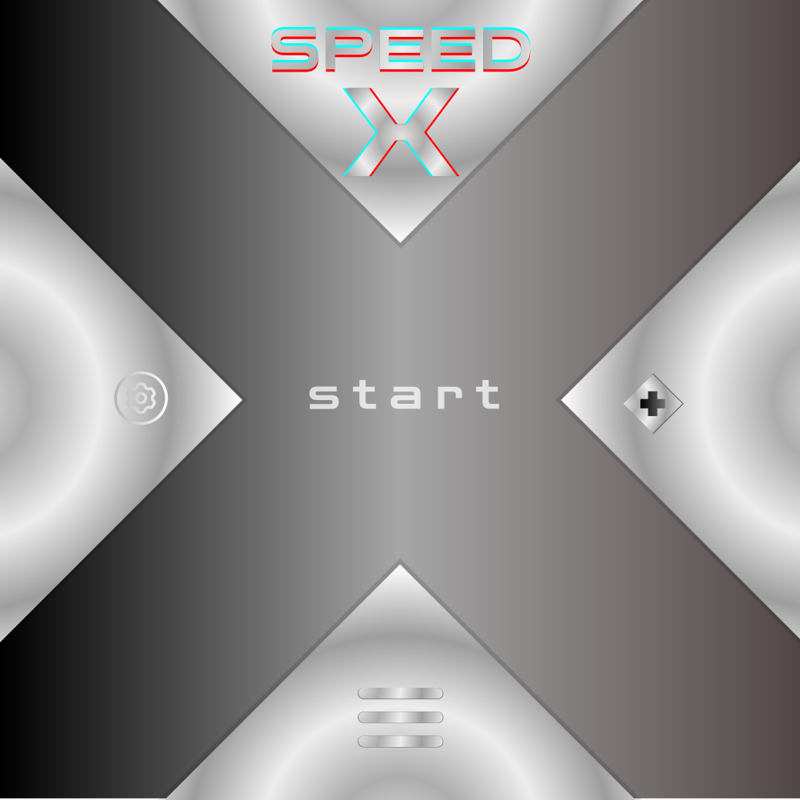

Module de centralisation
Conception d’un module autonome transformant une soixantaine de mails en un support pédagogique utilisable.
Bienvenue sur ma page portfolio. Je vous propose quelques projets témoignant de mon expertise numérique, macro et micro. De la programmation à la médiation culturelle, mon parcours en humanités numériques et philosophie, couplé à ma passion pour le développement, me permet de médier et concrétiser des projets techniques, adaptés et innovants.

Conception d’un module autonome transformant une soixantaine de mails en un support pédagogique utilisable.
Réalisation d’un cours à distance sur le droit d’auteur et l’utilisation de licences libres Creative Commons.

Projet personnel de développement de jeu vidéo mobile et PC de style jeu de réflexe avec progression rogue lite.
Au-delà de l'apport technique, mon rôle de médiateur numérique accorde une attention particulière aux enjeux contemporains. La fracture numérique, les dynamiques politiques, les défis éthiques et la veille technologique et culturelle sont autant de points cardinaux qui orientent et encadrent les choix stratégiques de mes projets.
De par mon parcours en philosophie et ma passion pour le numérique de façon naturelle je m’actualise sur les innovations, tendances et enjeux modernes.
Via mes divers projets : Design UI WEB (CSS, HTML), Jeu vidéo/Réalité virtuelle (C#, GDScript) et Algorithmique / Agentisation (Python, C++).
Ma formation en Philosophie a permis de développer mon esprit critique, une rigueur rédactionnelle ainsi qu'une culture générale étendue.
Projet personnel long, ou dossier de médiation en groupe ou à distance je sais déployer outils et communication pour mener à bien un projet.
Attentif aux enjeux autour de la fracture numérique et de l’ergonomie d’usage d’outils nouveaux, et de la numérisation des savoirs et objets.
Canva, Genialy, Moodle … mais aussi outils d’analyse discursive( trope, iramuteq), agent d’automatisation ( make. N8N …), création de chatbot, intelligence artificielle …
Si mes projets ont retenu votre attention ou que vous souhaitez me contacter, n'hésitez pas à le faire via ce formulaire.